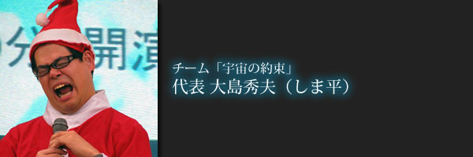

 チーム宇宙の約束 代表のしま平です。 今年の2月にチーム宇宙の約束の副代表を務めていたにぽぽさんが急逝しました。 去年の12月にてんつくマンと山元加津子さんの講演会の時に、 最後のスピーチでにぽぽさんが話していた時に、私が感じていた直感…。 「これで最後だから」 あれはそういうことだったのか…と思いました…。 にぽぽさんに初めて出会ったのは、7年前に私が生まれて初めて講演会に参加した時でした。 大好きな漫画「絶望に効くクスリ」の山田 玲司さんがゲスト出演する!との話を聞いて、 生まれつき耳が聞こえないくせに講演会と山田 玲司ファンのオフ会に参加した時でした。 いやぁ、怖かったですわ…(汗) 講演会の主催者やオフ会の主催者や参加者に「耳が聞こえないんですが、参加しても大丈夫ですか?」と 何度も聞いてましたし(笑) 当時の私は自分の「障害」を理由に結婚を断られた時期でもあり、自分を呪っていました…。 講演会会場で開演を待っていたところ、一目で障害を持っている人がスタッフをやっているのを見て、 「なんで障害もってるくせにスタッフなんてやっているんだろう…」と睨み付けてました。 そのスタッフの人がにぽちゃんでした…。 2ヵ月後、自分が「障害を持っていても、何か自分にできる事があるんじゃないか?」と あるボランティアグループに入りました。 そこには講演会でスタッフをやっていたにぽちゃんがいました。 にぽぽさんにはコイツはヤバイと思われてたみたいで、一年くらい話しませんでした(笑) ある日、初めて1/4の奇跡を見た次の日、ボランティアグループのミーティングで、 障害者をテーマにした議論があり、議論の中でにぽぽさんと初めて話をしました。 ミーティング後にボランティアグループの仲間達と飲み会があり、 そこでチーム宇宙の約束が発足しました。 その後、初めての1/4の奇跡の上映会を開く事になり、 勇気を出して、にぽぽさんに声をかけました。 「1/4の奇跡の上映会をやる事になったから、よかったら来てくれないかな?」 にぽぽさんは「その日、友人がやる上映会があるんだよね…。」と言ってました。 上映会当日、ボランティアで一緒に動いてくれていた仲間達が集ってきてくれました。 何故か、そこにはにぽぽさんが来てくれていました。 上映会後、顔を背けながら、肩を震わせているにぽぽさんがいました…。 全ては「宇宙の約束」から産まれた奇跡 http://be-smile-presents.net/to_sky_of_hope/2012/12/post-180.html その後、にぽぽさんと一緒にチーム宇宙の約束で活動していく事になりました。 思えば、一年以上も上映会を続け、その上、当時は前代未聞だった組み合わせである 入江富美子さんと山元加津子さんの講演会 てんつくマンと中村文昭さんと入江富美子さんの講演会 てんつくマンと山元加津子さんの講演会 このようなイベントを開催できたのも、 にぽぽさんを始め、チーム宇宙の約束の仲間達のお陰です。 にぽぽさんがよく言っていた想い…。 ----------------------------------------------------- 『一人ひとりが、その存在そのものを大切に想い、大切にされ、輝ける。 そして、その一人ひとりが認め合い、助け合い、許し合い、支え合い、 共に歩んでいく世界を目指し、私たちは、約束の下、集まってきたのだとそう思うのです。 そして、そのために、これからも歩み続けるのだとそう思います。 一人でも多くの人の心に「生きていく力」を伝えて行く。 全ての人の心の中にある「光」に気付くようにサポートしていく。 これが私がこの身体で産まれた意味なんだと改めて思いました。 皆さん、素晴らしいのです。 皆さん、頑張っているのです。 だからこそ、応援して、サポートしていきたいのです。 だから、私は生かされたのです。 そう改めて思います。 だって、人が喜んでくれたり、笑顔になってくれることが、とても、嬉しいのです。 なによりも幸せなのです。 自分の存在って、人に生きる力を分け与え、笑顔にするためにあるのだと自覚しているし、そのために生き続けて行きたいし、これからも、そのためなら自分のペースで、心の向くまま、やっていきたいのです。 「皆が共に生きていく世界を作りたい」 その自分の生きる指針は、絶対に外せないし、この指針があるからこそ、自分は生きていけるとそう思うのです。 だから、来年もこうやって歩み続けていくんだろうなとそう思う。 誰もが、自分らしく、自分の足で歩み続けていけるように。 自分らしい笑顔でいられるように。 背中を押してあげられる自分で有り続けたい。 ----------------------------------------------------- にぽぽさんの志を継ぎ、生前やりたいと言っていた「ゆずりは」を上映したいと思い、 今回のイベントに、参加させて頂いております。 人の想いは不滅であると思います。